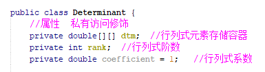
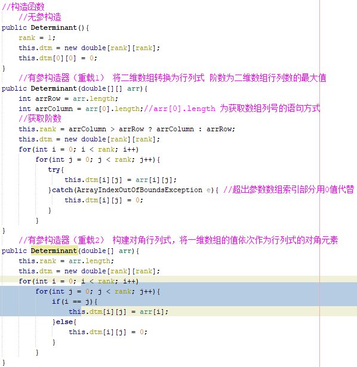
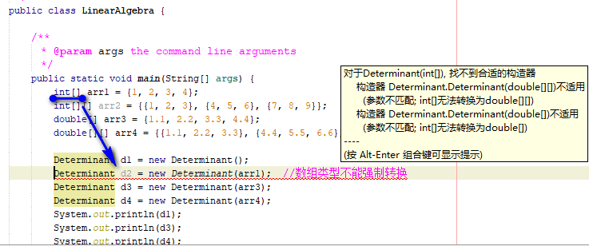

1. 前言：
线性代数分两大模块，其一是行列式，其二是矩阵。由于Java编程语言是纯面向对象的语言，根据面向对象的特点，可以首先把行列式和矩阵看作是类（class）。当然，考虑到继承是面向对象编程的一大特点，所以我们可以把矩阵作为行列式的继承类，即矩阵类继承于行列式。
然后，根据类具有两个成员（属性+方法）的特点，我们可以为行列式赋予存储行列式元素的容器属性，类型而二维数组，其他属性还包括行列式阶数和行列式系数，数据类型分别为整型和浮点型。
行列式类的方法则根据行列式的性质等进行设置。矩阵类的构建则根据一定规则继承于行列式类。那么接下来，我们首先从行列式类的构建说起。（编程环境为NetBeans）
2. 行列式的构建
2.1 行列式类的属性成员及访问修饰
如右图所示，该图为行列式类的属性成员及访问修饰符。要使行列式类能够被外部Java类所引用（这我们也是想达到的），就需要为该类的访问修饰设置为public，即公开的访问权限。
在图中，我们还看到了该行列式类的三个属性成员，分别是用以存储行列式元素的容器（dtm）、行列式的阶数（rank）（即行列式，由于行列式的行和列相等，所以以阶数表示行数和列数）以及行列式的系数（coefficient）。
就成员属性的数据类型而言，行列式顾名思义由一点相等行列元素组成，因此可以利用Java中的二维数组类型作为存储行列式元素的容器。阶数以整型数组存储以及系数用双精度浮点型类型存储，这两者就比较容易理解了。
关于行列式的访问权限。根据面向对象编程的特点，一个完整的类，其属性成员不应该在类外部轻而易举地被修改，即只可读不可直接写。因此这些属性成员的访问修饰均设置为了private，即私有的，仅能在类内部访问。
再说下属性成员的初始化问题。为了达到“能少占点内存就少占点内存”的理念，类的属性成员在不必要的时候可以不指定初始值，例如上图中的行列式元素存储容器（dtm），该属性都会在日后的每一个构造器中进行赋值，因此在这里进行指定初值作用并不大（且浪费）。行列式阶数（rank）跟dtm同理。而由于绝大多数情况下行列式的系数（coefficient）均为1，在类的构造过程中基本不同到，因此在这里九可以为该数据赋予初值1。
到这里，行列式类的属性成员及访问修饰的内容就讲完啦。
编辑于：2019年3月20日20点53分 吴希浙
Location: 37.997549N 114.515106E
无更新
2.2 行列式类的构造器
首先解释下构造器。构造器是能够创建对象的特殊方法，其名称需与类名完全一致，同时构造器不需要返回修饰，即无返回值，但需要public共有的访问权限，因为构造器需要在类的外部调用，这样才能构建对象，不然构造器就没有了它存在的意义了。总的来说构造器就相当于一种类似于静态方法的方法。
如右图，我为行列式类写了三个构造器，这三个构造器的不同之处在于参数设置的不同，这叫做方法的重载，通过不同的参数列表来调用不同效果的构造器。接下来我们来一一解读下这三个构造器的用意吧。
首先是第一个构造器，无参构造器。无参构造器顾名思义就是用来创建一个类似于空的行列式对象（构造器是一个类实例的过程，因此构造器创建出来的是对象而非类），因此我们称该行列对象式为默认行列式。默认行列式的阶数为1，即元素存储器一个存储单位，存储的元素值为0，阶数已在类体里（使用构造器前）默认为1。
另一个构造器，有参构造器。参数个数为1，该参数类型为二维数组类型。该构造器的用意是利用参数给出的二维数组直接作为行列式的元素存储容器。但问题来了，行列式的行列数的相等的，而二维数组的行列数是自由的（可等可不等），由此可能会产生的后果就是在构造器执行过程中由于形参二维数组和行列式元素存储器（dtm）不匹配导致索引溢出。那么解决该问题的办法是什么呢？如上图该构造器的代码，在设置行列式对象阶数时，运用了三元运算符（?:），当形参二维数组的行数大于列数时，行列式阶数等于行数，反过来，形参二维数组列号大于行号时，行列式行数等于列数。那么，在赋值给行列式元素存储器（dtm）时就不会出现索引溢出的情况，而多出来的存储为，以0值代替。但总的来说这并不是一种最好的解决办法，因为这样会造成行列式中的某一行或列值均为0，那么该行列式就没有运算的意义了，因为值为0。
第三个构造器。该构造器的参数为一维数组类型，用以是创建一个对角行列式对象。对角元素即为形参一维数组的元素，其余元素设为0（符合对角行列式特点）。
这里有一个问题。如上图,就是当传进来的参数数组类型为整型的时候，系统并不会把该整型数组强制转换为双精度浮点型数组，因此，如何使更多的数组类型作为参数传入构造器而又进可能的少写重载构造器是一个值得思考的问题。
到这里，行列式类的构造器的内容就讲完啦。
编辑于：2019年3月20日21点50分 吴希浙
Location: 37.997549N 114.515106E
无更新
未完待续